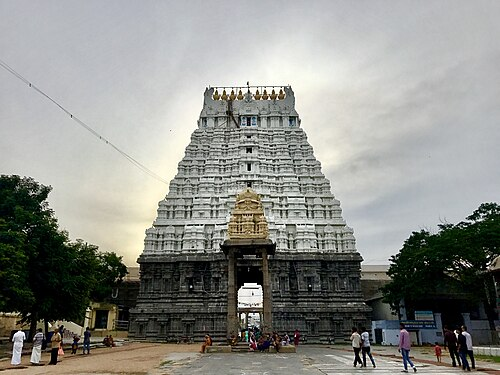
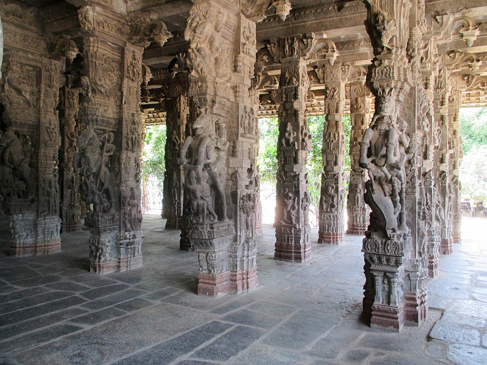
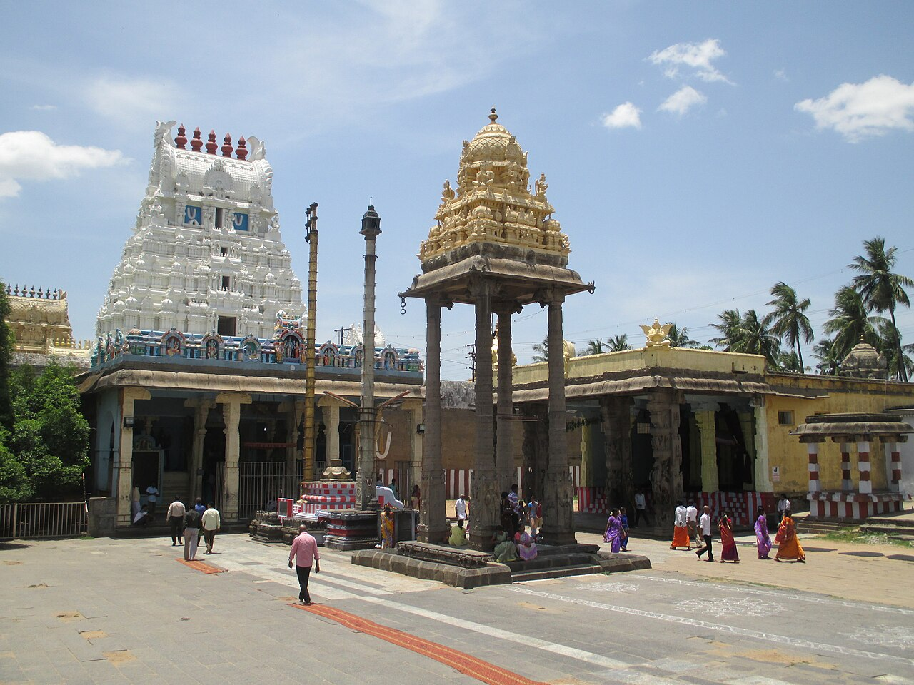
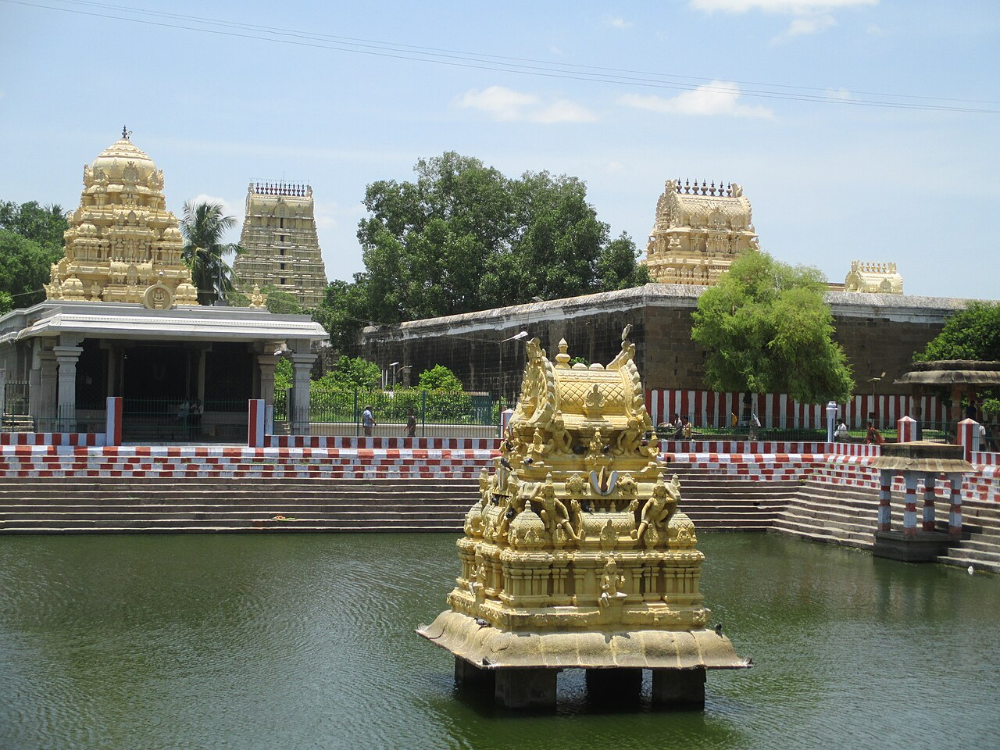

Varadharaja Perumal Temple
Kanchipuram – The City of a Thousand Temples and Ancient Tamil Spiritual Heritage
Overview
The Varadaraja Perumal Temple is one of the most magnificent and spiritually significant Vaishnavite temples in India, located in the ancient temple city of Kanchipuram. Dedicated to Lord Vishnu as Varadaraja Perumal (meaning “The King who Grants Boons”), this temple is one of the 108 Divya Desams, the holiest abodes of Vishnu praised in the Naalayira Divya Prabandham by the Alvars. Built originally by the Cholas in the 11th century and later expanded by the Vijayanagara kings, the temple spreads across nearly 23 acres and showcases towering gopurams, intricately carved stone pillars, massive halls, and sacred tanks. It stands atop Hastigiri Hill, adding geographical and spiritual elevation to its sanctity. The temple is not just a place of worship but a monumental symbol of classical Dravidian architecture, Vaishnavite philosophy, and centuries of uninterrupted devotion.
Sthala Purana (Legend and Spiritual Narrative)
According to the temple legend, Lord Brahma once performed a grand yajna (sacred ritual) here to seek the presence of Lord Vishnu. Pleased with the penance, Vishnu manifested as Varadaraja atop Hastigiri Hill. Another important legend says that the hill itself took the form of an elephant (Hasti in Sanskrit), hence the name Hastigiri. One of the most extraordinary and unique traditions associated with this temple is the Aththi Varadar festival, where the original wooden idol of the deity, carved from the sacred Aththi (fig) tree, is brought out from the temple tank once every 40 years for public darshan. The idol remains immersed in the temple tank for preservation and is worshipped only during this rare occasion, drawing millions of devotees. This tradition is one of the most unique ritual practices in any Hindu temple in India.
Moolavar
The presiding deity (Moolavar) is Lord Vishnu as Varadaraja Perumal, standing in a majestic posture facing west — which is itself unusual, as most Vishnu temples have east-facing deities. He holds the conch (Shankha) and discus (Chakra) and is worshipped with immense reverence. The consort is Perundevi Thayar, who has a separate shrine within the complex. The temple also houses beautiful carvings of lizards on the ceiling — known as the Golden and Silver Lizard sculptures — believed to remove sins when touched by devotees. This belief and architectural feature make it uniquely distinct from other temples.
The Mystery of Aththi Varadar – A Once-in-Forty-Years Divine Revelation
One of the most extraordinary and unmatched traditions of the Varadaraja Perumal Temple is the worship of Aththi Varadar, the original wooden idol of Lord Varadaraja carved from the sacred Aththi (fig) tree. Unlike typical temple idols that are permanently enshrined in sanctums, this ancient deity is kept immersed in the temple’s sacred tank, known as Anantha Saras, beneath a silver casket filled with water for preservation. What makes this practice astonishing is that the idol is brought out for public darshan only once every 40 years, during a grand festival that lasts for about 48 days. During this rare occasion, millions of devotees gather to witness the deity in two postures — reclining and standing — a sight that most devotees experience only once in their lifetime. This centuries-old ritual, preserved through royal patronage and temple tradition, is unparalleled in any other Vishnu temple in India, making Varadaraja Perumal Temple uniquely revered across the world.
The Golden and Silver Lizards – Symbolism of Karma and Redemption
Another unique and fascinating feature of the temple is the presence of the Golden and Silver Lizard sculptures mounted on the ceiling of a mandapam within the complex. These metal lizard images, along with representations of the sun and moon, are believed to hold profound spiritual symbolism. According to temple legend, two sages’ disciples were cursed to be reborn as lizards due to a mistake during a ritual. Upon worshipping Lord Varadaraja here, they were freed from their curse and regained their original forms. Since then, it is believed that touching these lizard sculptures removes sins, especially those committed unknowingly, and grants relief from doshas related to planetary afflictions. Devotees often queue specifically to touch these sculptures as an act of spiritual cleansing. The architectural placement, mythological backstory, and ritual importance of these golden and silver lizards make this temple distinct, as such a feature is rarely found with this level of devotional prominence in other temples.
Temple Timings
The temple is generally open from 6:00 AM to 12:30 PM in the morning and 4:00 PM to 8:30 PM in the evening. Timings may extend during festival seasons. Daily rituals follow the Vaikhanasa Agama tradition and include multiple poojas such as Viswaroopa Darshan, Kala Santhi, Uchikala Pooja, and Ardha Jama Pooja. Devotees can attend special archanas and sevas during these times.
Morning: 5:00 AM – 12:30 PM
Evening: 4:00 PM – 10:00 PM
Festivals
The most important festival is the Vaikasi Brahmotsavam (May–June), celebrated with grand processions on various vahanams like Garuda, Hanuman, Elephant, and Horse. The Garuda Sevai during this festival attracts massive crowds. The rare Aththi Varadar festival (once in 40 years) is the temple’s most globally known celebration. Other major festivals include Vaikunta Ekadasi, Panguni Uthiram, and Krishna Jayanthi. Each festival is celebrated with elaborate decorations, music, Vedic chanting, and community participation.
History
The temple dates back to the 11th century CE, initially constructed by the Chola dynasty and later magnificently expanded by the Vijayanagara Empire, particularly under King Krishnadevaraya. Numerous inscriptions within the temple walls record grants, donations, and renovations from different rulers. The famous Hundred Pillar Hall, built during the Vijayanagara period, is an architectural marvel with intricately carved scenes from the Ramayana and Mahabharata. The temple played a vital role in the development of Sri Vaishnavism and is closely associated with Ramanujacharya, who is believed to have served here.
Temple Gallery




Darshan & Special Poojas
Daily darshan is available during temple hours, and devotees can participate in Archana, Thirumanjanam (holy bath ceremony), and special sevas upon prior booking. Special poojas are conducted during Ekadasi days, Saturdays, and major festival days. During the Aththi Varadar festival year, darshan arrangements become highly elaborate due to the influx of devotees from across India and abroad.
Official Information & Contact
For official updates, darshan details, and announcements, devotees may visit the official website of Kanchi Sri Varadaraja Perumal Temple where updates on festivals, timings, and official announcements are posted.
🌐 Official Website:
https://varadarajaperumal.hrce.tn.gov.in
📞 Temple Contact:
+91 44 2720 3422
📧 Email:
There isn’t a widely publicised official email for the temple itself, but devotees can use the Tamil Nadu HRCE (Hindu Religious & Charitable Endowments) official portal to send enquiries or feedback.
Temple Location
The temple is located about 2–3 km from Kanchipuram Railway Station and around 70 km from Chennai.
📍 Get Directions to Temple